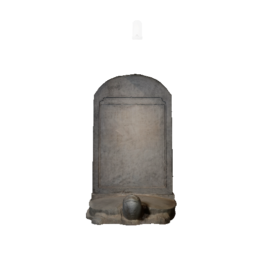
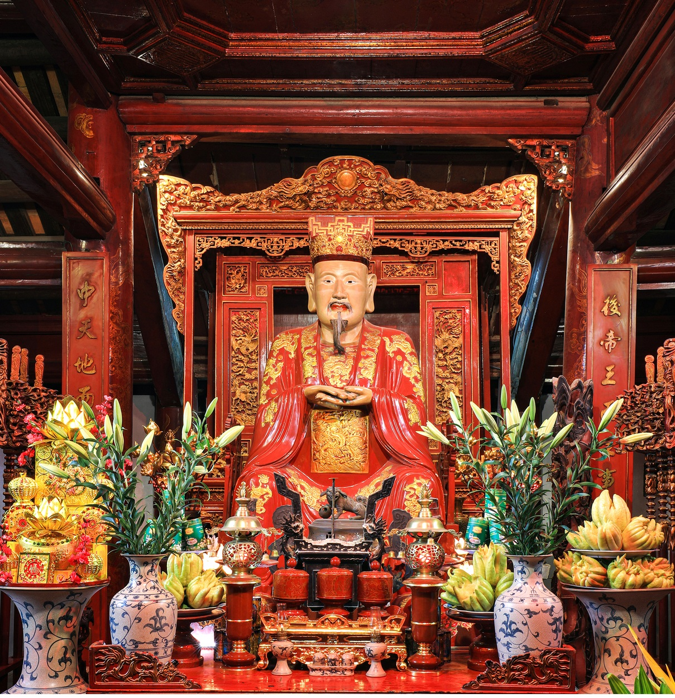
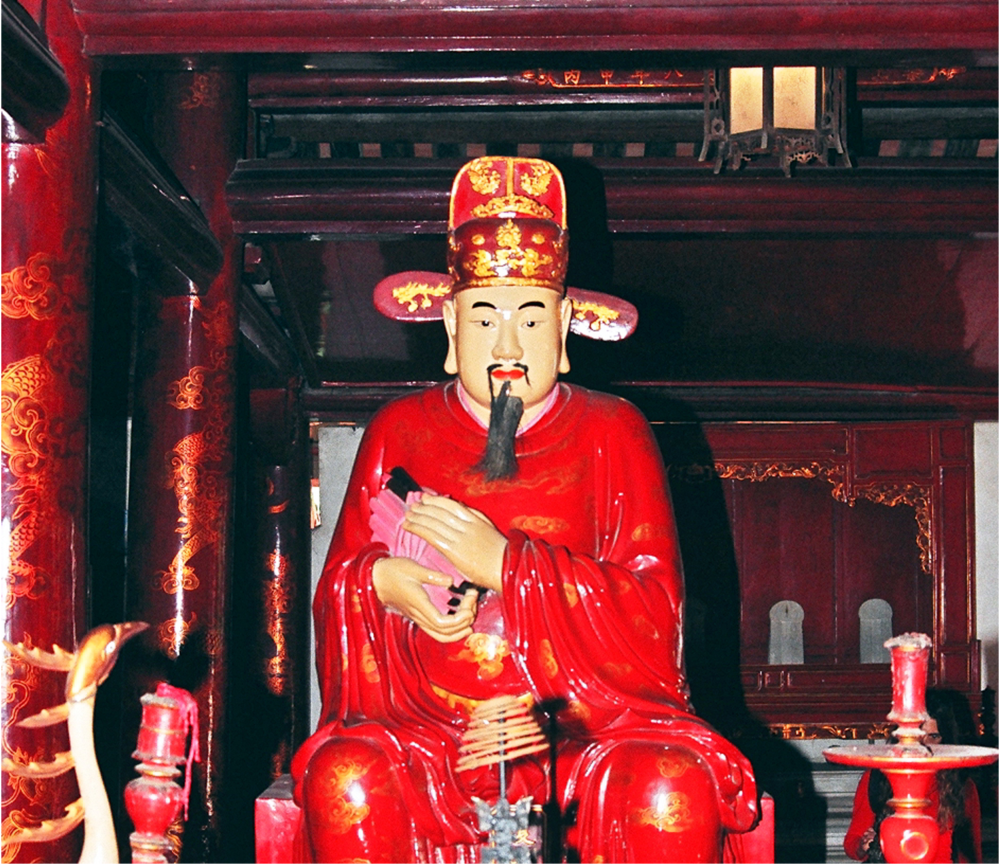
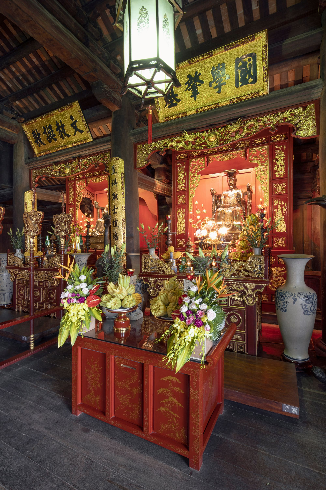
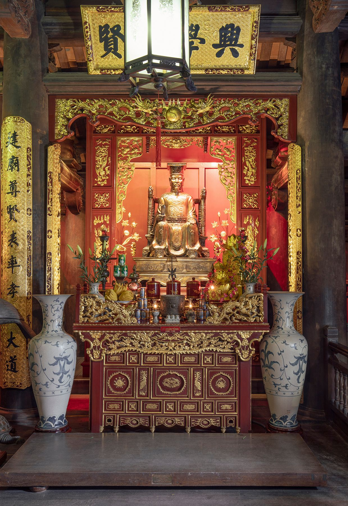
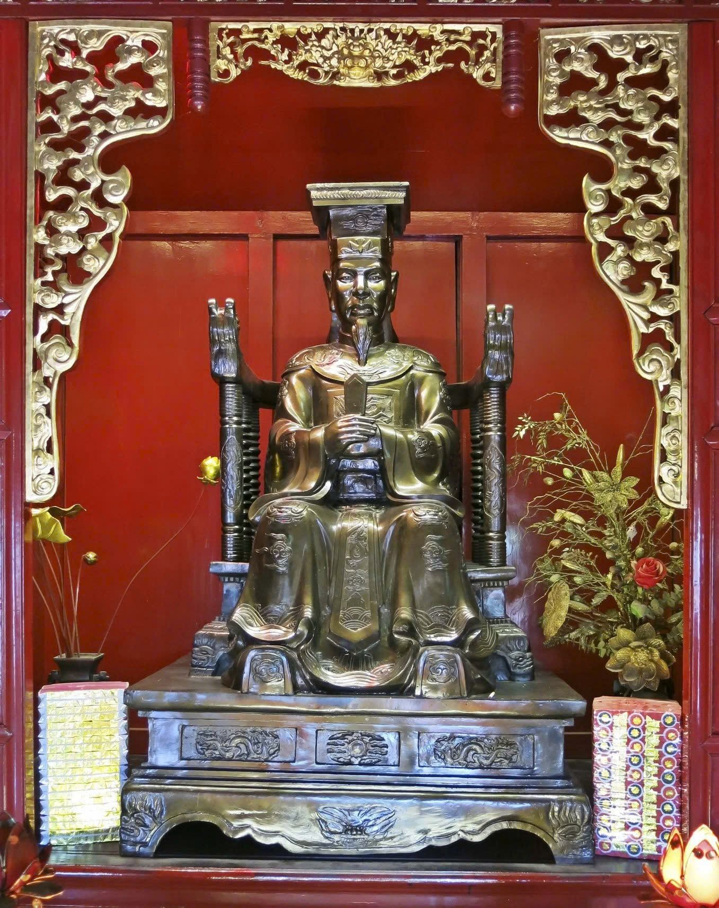
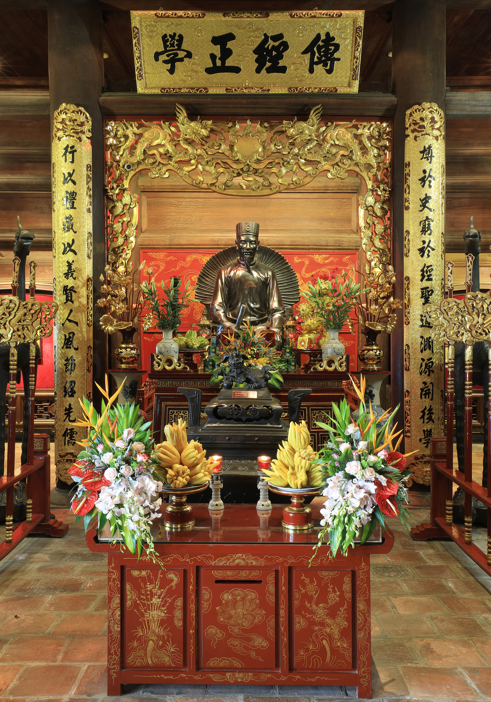
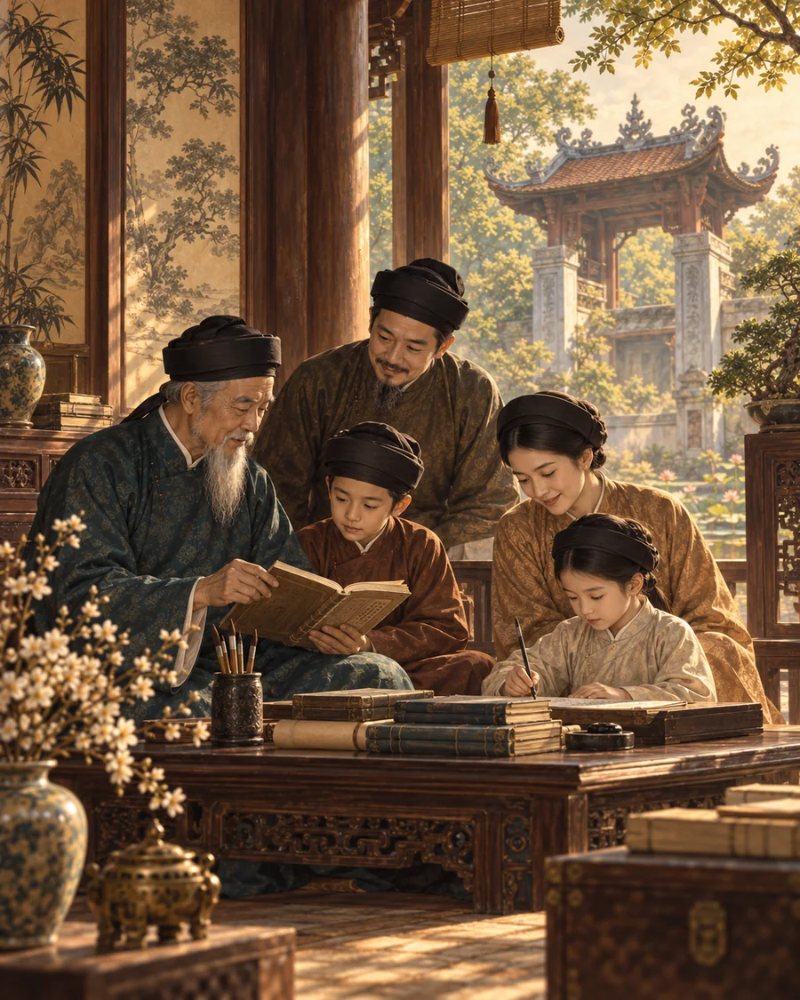
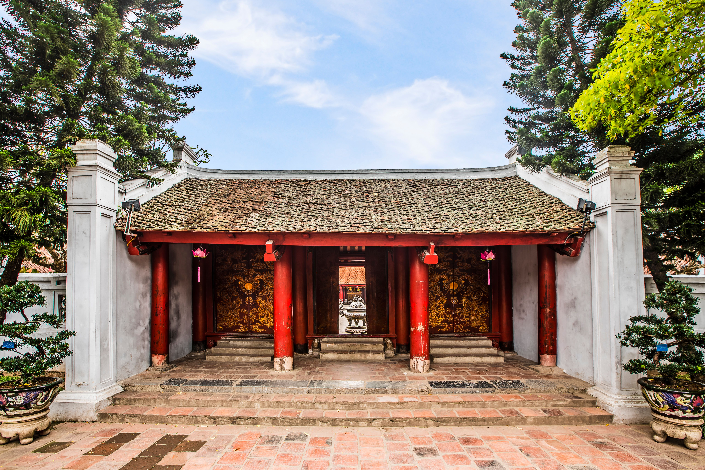

01
HỌC
Học tập suốt đời
Tri thức không dừng lại ở trường lớp; tinh thần học hỏi cần theo mỗi người suốt cuộc đời.
Tinh thần hiếu học của Văn Miếu - Quốc Tử Giám không chỉ thuộc về quá khứ. Những giá trị ấy vẫn có thể trở thành cách học, cách sống và trách nhiệm của mỗi thế hệ hôm nay.
Tri thức không dừng lại ở trường lớp; tinh thần học hỏi cần theo mỗi người suốt cuộc đời.
Chủ động tìm hiểu và làm mới kiến thức giúp chúng ta thích nghi với một thế giới luôn thay đổi.
Giá trị của việc học nằm ở hiểu biết, kỹ năng và khả năng tạo ra ích lợi, không chỉ ở bằng cấp.
Tài năng chỉ bền vững khi đi cùng nhân cách, trách nhiệm và ý thức sử dụng tri thức vì cộng đồng.
Tôn sư trọng đạo nhắc mỗi thế hệ biết trân trọng người truyền dạy và giá trị của tri thức chân chính.
Học để làm điều mới, giải quyết vấn đề và biến tri thức thành những đóng góp tích cực cho xã hội.
Giữ gìn Văn Miếu - Quốc Tử Giám cũng là gìn giữ ký ức giáo dục và truyền thống hiếu học của dân tộc.
Thế hệ trẻ tiếp nối di sản bằng việc học nghiêm túc, sống có trách nhiệm và lan tỏa tinh thần hiếu học.
Gần một nghìn năm hình thành và phát triển của Văn Miếu - Quốc Tử Giám, từ ngày dựng nền móng đến khi trở thành di sản tư liệu thế giới.
Vua Lý Thánh Tông cho xây dựng Văn Miếu tại kinh thành Thăng Long.
Triều Lý tổ chức khoa thi Nho học đầu tiên.
Vua Lý Nhân Tông lập Quốc Tử Giám.
Khoa thi Tiến sĩ đầu tiên được dựng bia ghi danh.
Vua Lê Thánh Tông cho dựng bia Tiến sĩ tại Văn Miếu.
Khuê Văn Các được xây dựng dưới triều Nguyễn.
Văn Miếu - Quốc Tử Giám được xếp hạng Di tích lịch sử văn hóa cấp quốc gia.
82 bia Tiến sĩ được UNESCO ghi danh vào Chương trình Ký ức thế giới.
Văn Miếu - Quốc Tử Giám được xếp hạng Di tích quốc gia đặc biệt.
82 bia Tiến sĩ được công nhận là Bảo vật quốc gia.
Di sản tư liệu thế giới
Khám phá hệ thống bia ghi danh những người đỗ đại khoa qua 82 khoa thi từ năm 1442 đến năm 1779. Hãy lướt ngang trên “con đường bia” để chuyển giữa các khoa thi.

Tư liệu tổng quan tham khảo từ Trung tâm Hoạt động Văn hóa Khoa học Văn Miếu – Quốc Tử Giám. Dữ liệu chi tiết của khoa Nhâm Tuất 1442 được thể hiện theo trang “Bia Tiến sĩ” của Văn Miếu.
Điện Đại Thành là không gian thờ Khổng Tử và Tứ Phối; tại khu Thái Học, Hậu đường thờ ba vị vua Lý Thánh Tông, Lý Nhân Tông, Lê Thánh Tông cùng Danh sư Chu Văn An. Nhấn vào từng thẻ để xem thêm thông tin.

Thời Xuân Thu · 551–479 TCN
Nhà tư tưởng, nhà giáo dục; nhân vật trung tâm của không gian thờ tự Văn Miếu.
↻ Nhấn để xem chi tiết551–479 TCN
Khổng Tử tên Khâu, tự Trọng Ni, là nhà tư tưởng, triết học và nhà giáo dục tiêu biểu của Trung Quốc cổ đại. Tư tưởng giáo dục và đạo học của ông có ảnh hưởng sâu rộng tới nền Nho học ở Việt Nam.
Tại Điện Đại Thành, tượng Khổng Tử được đặt ở vị trí trung tâm, cùng không gian thờ Tứ Phối và Thập Triết.
Nhấn lại hoặc nhấn ra ngoài để quay về ảnh.
Thời Xuân Thu – Chiến Quốc
Bốn bậc Thánh được phối hưởng và thờ chung với Khổng Tử.
↻ Nhấn để xem chi tiếtBốn vị được phối hưởng với Khổng Tử
Tứ Phối gồm Nhan Hồi (Nhan Tử), Tăng Sâm (Tăng Tử), Khổng Cấp (Tử Tư) và Mạnh Kha (Mạnh Tử).
Các vị đại diện cho sự kế truyền tư tưởng và đạo học của Nho gia, được thờ chung với Khổng Tử tại Điện Đại Thành.
Nhấn lại hoặc nhấn ra ngoài để quay về ảnh.
Triều Lý · 1023–1072
Vị vua cho dựng Văn Miếu tại kinh thành Thăng Long năm 1070.
↻ Nhấn để xem chi tiết1023–1072 · ở ngôi 1054–1072
Lý Thánh Tông húy Nhật Tôn. Năm 1070, nhà vua cho dựng Văn Miếu, đặt nền móng cho không gian thờ tự và truyền thống giáo dục Nho học tại kinh thành Thăng Long.
Tượng thờ của ông hiện đặt tại tầng trên nhà Hậu đường khu Thái Học.
Nhấn lại hoặc nhấn ra ngoài để quay về ảnh.
Triều Lý · 1066–1128
Tổ chức khoa thi đầu tiên năm 1075 và lập Quốc Tử Giám năm 1076.
↻ Nhấn để xem chi tiết1066–1128 · ở ngôi 1072–1128
Lý Nhân Tông húy Càn Đức. Năm 1075, nhà vua tổ chức khoa thi Nho học đầu tiên; năm 1076 cho lập Quốc Tử Giám, đặt cơ sở cho sự phát triển của nền giáo dục và khoa cử Nho học Việt Nam.
Tượng thờ của ông hiện đặt tại tầng trên nhà Hậu đường khu Thái Học.
Nhấn lại hoặc nhấn ra ngoài để quay về ảnh.
Triều Lê sơ · 1442–1497
Phát triển giáo dục, mở rộng Quốc Tử Giám và khởi dựng bia Tiến sĩ.
↻ Nhấn để xem chi tiết1442–1497 · ở ngôi 1460–1497
Dưới thời Lê Thánh Tông, giáo dục và khoa cử Nho học phát triển mạnh. Năm 1483, nhà vua cho tu sửa, mở rộng Văn Miếu - Quốc Tử Giám; năm 1484 cho dựng những tấm bia Tiến sĩ đầu tiên để biểu dương hiền tài.
Tượng thờ của ông hiện đặt tại tầng trên nhà Hậu đường khu Thái Học.
Nhấn lại hoặc nhấn ra ngoài để quay về ảnh.
Triều Trần · 1292–1370
Danh sư, từng giữ chức Tư nghiệp Quốc Tử Giám, biểu tượng của đạo làm thầy.
↻ Nhấn để xem chi tiết1292–1370
Chu Văn An là nhà giáo mẫu mực, từng giữ chức Tư nghiệp Quốc Tử Giám. Ông được tôn kính bởi học vấn, khí tiết và tinh thần giáo dục đặt đạo đức, nhân cách lên hàng đầu.
Tượng thờ Chu Văn An hiện đặt tại tầng dưới nhà Hậu đường khu Thái Học.
Nhấn lại hoặc nhấn ra ngoài để quay về ảnh.Sáu lát cắt ngắn giúp khám phá nền nếp học hành, đạo thầy trò và quan niệm trọng dụng nhân tài đã góp phần tạo nên bản sắc khoa bảng của Thăng Long - Hà Nội.
Từ thời quân chủ, học tập được xem là con đường tu dưỡng bản thân, mở mang tri thức và góp sức cho xã hội.
Văn Miếu - Quốc Tử Giám trở thành biểu tượng rõ nét cho khát vọng học để thành tài, thành người của nhiều thế hệ.
Nhấn lại hoặc nhấn ra ngoài để quay về ảnh.Người thầy không chỉ truyền chữ mà còn hướng dẫn đạo đức, cách ứng xử và trách nhiệm của người có học.
Hình tượng Danh sư Chu Văn An tại Quốc Tử Giám là một biểu tượng tiêu biểu của truyền thống kính thầy, trọng đạo.
Nhấn lại hoặc nhấn ra ngoài để quay về ảnh.Khoa cử là một phương thức tuyển chọn người có học vấn để tham gia bộ máy nhà nước và phục vụ đất nước.
Tinh thần ấy được khái quát nổi tiếng trong lời bia: “Hiền tài là nguyên khí của quốc gia”.
Nhấn lại hoặc nhấn ra ngoài để quay về ảnh.
Trong nhiều gia đình và dòng họ, việc học được duy trì qua nhiều thế hệ bằng gia giáo, sách vở và sự khuyến khích con cháu theo đuổi chữ nghĩa.
Thành đạt trong học hành trở thành niềm tự hào của gia đình và cộng đồng, góp phần nuôi dưỡng truyền thống khoa bảng.
Nhấn lại hoặc nhấn ra ngoài để quay về ảnh.Quan niệm truyền thống không tách tri thức khỏi nhân cách: người có học cần biết tự rèn mình và dùng năng lực đúng chỗ.
Lý tưởng của kẻ sĩ là đem sở học để giúp dân, giúp nước và giữ gìn đạo lý.
Nhấn lại hoặc nhấn ra ngoài để quay về ảnh.Là kinh đô lâu đời, Thăng Long tập trung nhiều hoạt động giáo dục, thi cử và sinh hoạt học thuật của đất nước.
Văn Miếu - Quốc Tử Giám góp phần biến nơi đây thành điểm gặp gỡ của thầy giỏi, sĩ tử và nhân tài từ nhiều vùng.
Nhấn lại hoặc nhấn ra ngoài để quay về ảnh.Quần thể Văn Miếu - Quốc Tử Giám được tổ chức theo trục Bắc - Nam, đan xen kiến trúc, sân vườn, mặt nước và các không gian thờ tự - giáo dục. Mỗi công trình là một lớp ký ức riêng, cùng tạo nên tổng thể di tích hài hòa và giàu giá trị nghệ thuật.
Không gian mặt nước phía trước di tích, góp phần tạo thế cân bằng và cảnh quan thanh nhã cho tổng thể Văn Miếu.
Lớp không gian mở đầu hành trình vào di tích, dẫn người xem từ cổng ngoài đến những khu vực học thuật và thờ tự phía trong.
Công trình biểu tượng của Văn Miếu, gắn với hình ảnh văn chương, tri thức và vẻ đẹp kiến trúc thanh thoát của Thăng Long - Hà Nội.
Giếng vuông nằm giữa Khuê Văn Các và Vườn bia, tạo khoảng thoáng, phản chiếu bầu trời và cân bằng không gian kiến trúc xung quanh.
Không gian lưu giữ 82 bia Tiến sĩ trên lưng rùa đá, kết hợp giá trị tư liệu, điêu khắc đá và truyền thống tôn vinh hiền tài.


2 ảnhCổng dẫn vào khu trung tâm thờ Khổng Tử, đánh dấu sự chuyển tiếp từ không gian khoa bảng sang khu vực nghi lễ trang trọng.
Không gian thờ tự quan trọng của Văn Miếu, mang đậm nét kiến trúc truyền thống với hệ khung gỗ, mái ngói và không khí trang nghiêm.
Không gian gợi nhắc truyền thống đào tạo của Quốc Tử Giám và ngày nay là nơi giới thiệu, tưởng niệm các bậc danh sư, minh quân.